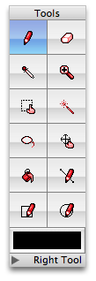

Getting started with Pixen
You're about to start working with the Mac's best pixel art software. To begin, you must create a new document.
To create a new document:
Use the File > New (⌘N) menu item.
Pixen will prompt you for the size you'd like your new document to be, but don't worry: you can always change it later. Now that you've got a document open, take a look over at the tool palette, which looks like this:

Simply select a tool by clicking on it to begin using it with your image. All tools operate with a simple click-and-drag operation, just as they would in any other graphics program. See the topics below for more information: